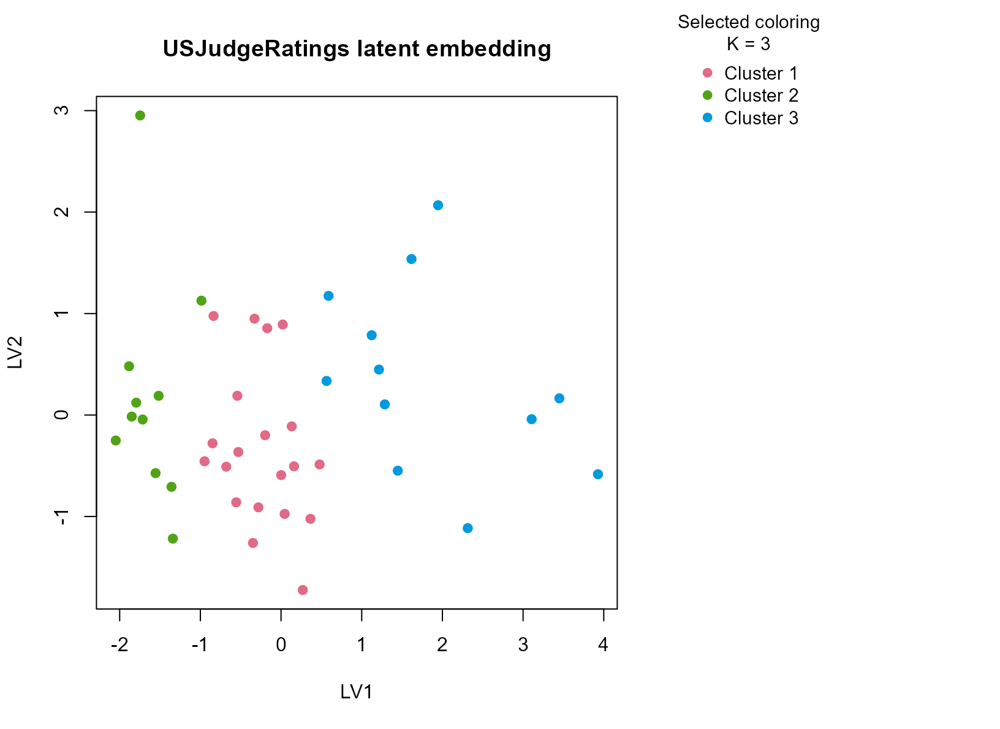
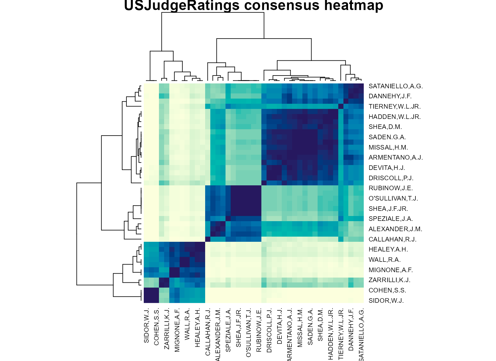

Background
USJudgeRatings contains lawyer ratings of judges on
several professional dimensions such as integrity, demeanor, diligence,
and case-management ability. The table is useful because it mixes
correlated judicial evaluation scores with an ordinal band derived from
one anchor variable, producing a compact but non-trivial mixed
dataset.
Objective
The objective is to determine whether the rating table supports stable judge profiles and whether those profiles reflect broad judicial evaluation patterns rather than noise in any single score.
Data preparation
judge_df <- as.data.frame(USJudgeRatings)
judge_df$sample_id <- rownames(judge_df)
judge_df$cont_band <- ordered(
cut(judge_df$CONT, breaks = c(-Inf, 5.5, 7, Inf), labels = c("low", "mid", "high")),
levels = c("low", "mid", "high")
)
analysis_judge <- judge_df[, c("sample_id", "CONT", "INTG", "DMNR", "DILG", "CFMG", "cont_band")]
head(analysis_judge)
#> sample_id CONT INTG DMNR DILG CFMG cont_band
#> AARONSON,L.H. AARONSON,L.H. 5.7 7.9 7.7 7.3 7.1 mid
#> ALEXANDER,J.M. ALEXANDER,J.M. 6.8 8.9 8.8 8.5 7.8 mid
#> ARMENTANO,A.J. ARMENTANO,A.J. 7.2 8.1 7.8 7.8 7.5 high
#> BERDON,R.I. BERDON,R.I. 6.8 8.8 8.5 8.8 8.3 mid
#> BRACKEN,J.J. BRACKEN,J.J. 7.3 6.4 4.3 6.5 6.0 high
#> BURNS,E.B. BURNS,E.B. 6.2 8.8 8.7 8.5 7.9 midAnalysis
fit_judge <- fit_uccdf(
analysis_judge,
id_column = "sample_id",
candidate_k = 1:5,
n_resamples = 20,
n_null = 39,
row_fraction = 0.85,
col_fraction = 0.85,
seed = 909
)
fit_judge$selection
#> $alpha
#> [1] 0.05
#>
#> $global_p_value
#> [1] 0.025
#>
#> $null_family
#> [1] "independence_marginal_null"
#>
#> $detected_structure
#> [1] TRUE
#>
#> $best_exploratory_k
#> [1] 3
#>
#> $best_supported_k
#> [1] 3
select_k(fit_judge)
#> k stability null_mean null_sd stability_excess z_score p_value supported
#> 1 2 0.5324215 0.2540963 0.06217102 0.2783252 4.476768 0.025 TRUE
#> 2 3 0.4227702 0.2009704 0.03782199 0.2217997 5.864305 0.025 TRUE
#> 3 4 0.5144709 0.2573416 0.04153754 0.2571292 6.190284 0.025 TRUE
#> 4 5 0.5600739 0.3460437 0.05067768 0.2140302 4.223362 0.025 TRUE
#> objective
#> 1 4.338138
#> 2 5.644583
#> 3 4.913025
#> 4 1.901474Results
judge_assign <- merge(augment(fit_judge), judge_df, by.x = "row_id", by.y = "sample_id", all.x = TRUE)
head(judge_assign)
#> row_id cluster confidence ambiguity exploratory_cluster
#> 1 AARONSON,L.H. 1 0.8686998 0.13130021 1
#> 2 ALEXANDER,J.M. 2 0.8321296 0.16787037 2
#> 3 ARMENTANO,A.J. 1 0.9253230 0.07467698 1
#> 4 BERDON,R.I. 2 0.8530159 0.14698413 2
#> 5 BRACKEN,J.J. 3 0.6890183 0.31098175 3
#> 6 BURNS,E.B. 2 0.7991667 0.20083333 2
#> exploratory_confidence exploratory_ambiguity assignment_mode selected_k
#> 1 0.8686998 0.13130021 selected 3
#> 2 0.8321296 0.16787037 selected 3
#> 3 0.9253230 0.07467698 selected 3
#> 4 0.8530159 0.14698413 selected 3
#> 5 0.6890183 0.31098175 selected 3
#> 6 0.7991667 0.20083333 selected 3
#> exploratory_k CONT INTG DMNR DILG CFMG DECI PREP FAMI ORAL WRIT PHYS RTEN
#> 1 3 5.7 7.9 7.7 7.3 7.1 7.4 7.1 7.1 7.1 7.0 8.3 7.8
#> 2 3 6.8 8.9 8.8 8.5 7.8 8.1 8.0 8.0 7.8 7.9 8.5 8.7
#> 3 3 7.2 8.1 7.8 7.8 7.5 7.6 7.5 7.5 7.3 7.4 7.9 7.8
#> 4 3 6.8 8.8 8.5 8.8 8.3 8.5 8.7 8.7 8.4 8.5 8.8 8.7
#> 5 3 7.3 6.4 4.3 6.5 6.0 6.2 5.7 5.7 5.1 5.3 5.5 4.8
#> 6 3 6.2 8.8 8.7 8.5 7.9 8.0 8.1 8.0 8.0 8.0 8.6 8.6
#> cont_band
#> 1 mid
#> 2 mid
#> 3 high
#> 4 mid
#> 5 high
#> 6 mid
aggregate(
cbind(CONT, INTG, DMNR, DILG, CFMG, confidence) ~ cluster,
judge_assign,
function(x) round(mean(x, na.rm = TRUE), 2)
)
#> cluster CONT INTG DMNR DILG CFMG confidence
#> 1 1 7.10 8.14 7.74 7.79 7.59 0.86
#> 2 2 7.58 8.85 8.71 8.67 8.35 0.87
#> 3 3 7.87 7.05 6.06 6.63 6.49 0.76
table(judge_assign$cluster, judge_assign$cont_band)
#>
#> low mid high
#> 1 0 10 10
#> 2 0 3 8
#> 3 0 3 9
round(prop.table(table(judge_assign$cluster, judge_assign$cont_band), margin = 1), 3)
#>
#> low mid high
#> 1 0.000 0.500 0.500
#> 2 0.000 0.273 0.727
#> 3 0.000 0.250 0.750
plot_embedding(fit_judge, color_by = "selected", main = "USJudgeRatings latent embedding")
plot_consensus_heatmap(fit_judge, main = "USJudgeRatings consensus heatmap")
Discussion
The selected two-cluster solution typically separates judges with
stronger ratings across multiple professional dimensions from those with
more moderate scores. The important point is that the separation is
multivariate: integrity, demeanor, diligence, and case-management scores
tend to move together, so the clusters are not driven by
CONT alone even though the ordinal band is useful for
interpretation.
This analysis is a good example of a table where the dominant
structure is broad rather than fine-grained. A stability-first method is
therefore appropriate, because an aggressive high-K
partition would be easy to over-interpret as judicial 窶徼ypes窶・when the
data may only support a coarse favorable-versus-more- moderate
distinction.
Interpretation
For USJudgeRatings, the clusters should be interpreted
as stable judicial evaluation profiles defined by jointly higher versus
more moderate professional ratings. They are not normative categories of
judges. Their purpose is to give a reproducible exploratory summary of
the ratings table that can be inspected with both numeric summaries and
consensus structure plots.